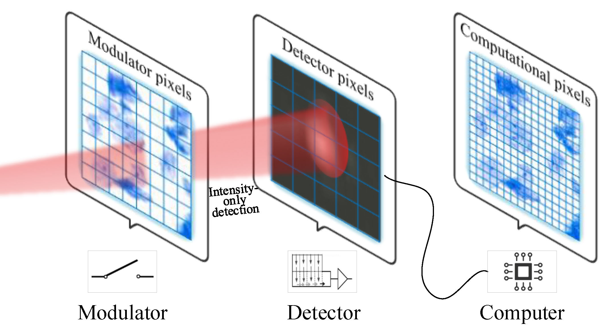

We report a novel large-scale phase retrieval technique, with high efficiency and strong generalization on different imaging modalities. We for the first time demonstrate 8K-level (7680×4320 pixels) phase retrieval in minute-level time.
We report a novel large-scale phase retrieval technique, with high efficiency and strong generalization on different imaging modalities. We for the first time demonstrate 8K-level (7680×4320 pixels) phase retrieval in minute-level time.

We report an efficient plug-and-play pixel super-resolution phase retrieval technique, with enhanced imaging resolution and strong robustness. Extensive experiments show that PNP-PSR outperforms the existing techniques in both resolution enhancement and noise suppression.
We report an iterative optimization framework which incorporates phase retrieval and noise relaxation together, to realize Fourier ptychographic reconstruction using low signal-to-noise-ratio images captured under low exposure time.
We report a novel algorithm which incorporates Poisson maximum likelihood objective function and truncated Wirtinger gradient together into a gradient descent optimization framework, to efficiently handle various degenerations that commonly exist in Fourier ptychographic setups including Gaussian noise, Poisson noise, speckle noise and pupil location error.
We report a motion-corrected Fourier ptychographic technique to efficiently correct for unknown sample motion. This is crucial for applying the Fourier ptychography scheme to high-resolution endoscopy and transmission electron microscopy.
This code package contains a simulation demo for single-pixel imaging (SPI) with different reconstruction methods including
[1] differential ghost imaging (DGI);
[2] gradient descent (GD);
[3] conjugate gradient descent (CGD);
[4] Poisson maximum likelihood (Poisson);
[5] alternating projection (AP);
[6] sparse representation compressive sensing (Sparse);
[7] total variation compressive sensing (TV).
Hope this package help you more easily get into the SPI world :) Enjoy it!
We report a single-pixel depth imaging (SPDI) technique that uses a single-pixel detector to acquire both the target's depth and reflectance images.
We report the first technique realizing non-interferometric complex-field imaging using a single-pixel detector, which effectively decreases measurements’ dynamic range by more than 7 orders of magnitude, and extends the working spectrum of coherent diffraction imaging far beyond the visible range.